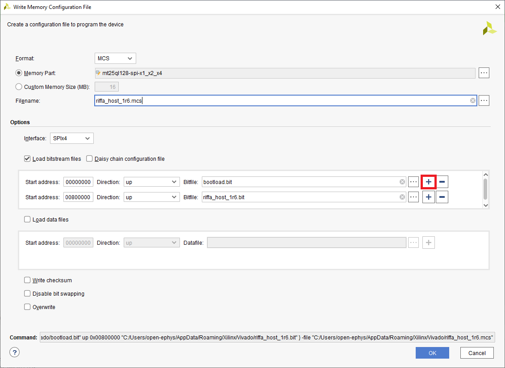
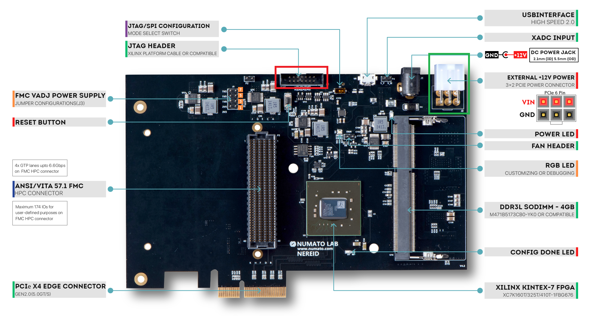

Enter the following values into the form and click OK. This will generate an
.mcs file that can be flashed onto your PCIe host board.
Format: MCS
Memory part: mt25ql128-spi-x1_x2_x4
Interface: SPIx4
Load bitstream files: enabled
Select the two bitfiles (”*.bit”). Bootloader at address 0x0000000,
normal image at address 0x0800000. Both with direction “up”.
Every other option disabled

Note
To add the second, bit file, click the “plus” icon on the first
row in the table under Load Bitstream files (red in image).
After generating the mcs file, plug in a Xilinx Platform Cable
II to a
USB port on your computer. Then plug the other end into the JTAG connector
(red box in figure) on the PCIe host board.

Note
If the host board is not already plugged into a PCIe slot, do so
now and be sure to also be sure to plug in an ATX power connection (green
box in figure).
In the Hardware Manager, click Open Target and select “Auto Connect” to find
the programmer and scan for the FPGA on the JTAG chain.
Search for “mt25ql128-spi-x1_x2_x4” in the “Memory Device” field and add it.
Add the path to the .mcs file generated previously in the “Configuration
file” field. Click OK to flash the PCIe host board.
{kind=link}
{kind=link}
{kind=link}
{kind=link}